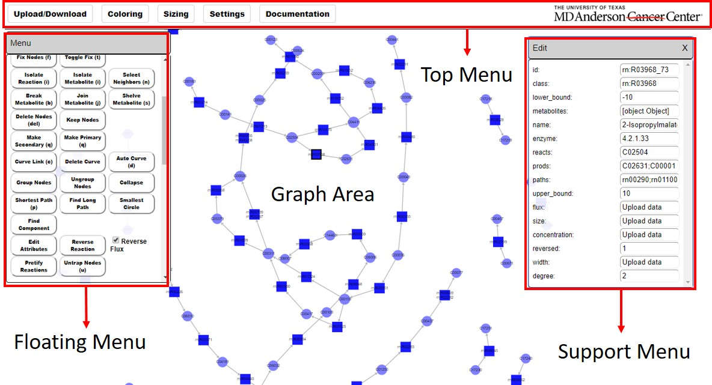

SAMMI Interface¶

{kind=link}
The SAMMI working interface is composed of four main parts: (1) Top Menu, (2) Graph Area, (3) Floating Menu, and (4) Support Menu.
Once a model is loaded, the SAMMI working interface will be displayed with the uploaded graph. The SAMMI interface is composed largely of four parts:
- Top Menu: The top menu bar is displayed across the top of the browser window. This menu has multiple tabs with a wide variety of functionalities which will be covered throughout this documentation
- Graph Area: This is the area where the nodes and edges of your current graph are displayed. Nodes in this area can be dragged and modified, shapes and text annotations can be added, and the area can be zoomed in and out and panned.
- Floating Menu: The floating menu is constantly displayed inside the graph area. This menu can be dragged to different parts of the graph area using the top title bar or empty areas of the window. This menu displays a series of functionalities that can be used to modify and navigate the current graph. See the Floating Menu section of the documentation for or a full description of all functionalities available in this part of the interface.
- Supporting Menu: The supporting menu is an additional menu window, similar to the floating menu, which is loaded for specific functionalities such as combining subgraphs, changing texts, or altering node data. Like the floating menu this window can be dragged around the map area, but it can also be closed by clicking the top right corner of the window.